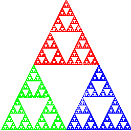
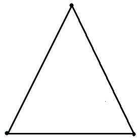
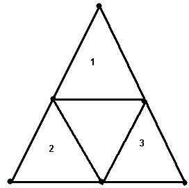
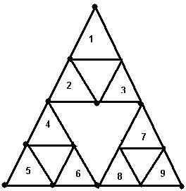
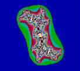
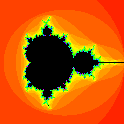

Recently, mathematics has been the backdrop to some
very successful plays and films including A Beautiful Mind, Good Will Hunting, and
the Pulitzer prize winning play
Proof.
In Tom Stoppard’s hilarious and award winning play, Arcadia,
mathematics is not only a
backdrop but a major player. In a
British manor house, during both the nineteenth century and
the present day, and sharing the stage with sex and satire,
fractal geometry, chaos, thermodynamics and even Fermat’s last
theorem play starring roles in Stoppard’s
captivating, yet sometimes
inscrutable, comedy.
Since
its
premiere
in
1993, mathematicians have been fascinated with Arcadia. Indeed, Arcadia was the only
play ever to be reviewed in Scientific
American. Allyn Jackson, in a review published in Notices
of The American Mathematical Society, noted that “Stoppard has
understood something of the poetic heart of this area of
mathematics” and praised the playwright for “the thoroughness
with which [he] has integrated
these mathematical ideas into the action of the play.”
For this lab, we’ll use “Arcadian
mathematics” as our
starting point. We will
touch upon fractal geometry and chaos as well as how computers
and technology have helped these fields grow and mature. In the process, you will see a
wonderful symbiotic relationship between mathematics and
computer science.
We begin in a large country estate in Derbyshire, England. The time is April 1809. In this scene, thirteen year old Thomasina is engaged in conversation with her tutor Septimus Hodge:
THOMASINA:
Each week I plot your equations, dot for dot, x’s against y’s in all matter of algebraical relation, and every week they
draw themselves as commonplace geometry, as if the world of forms were nothing but arcs and angles. God’s truth, Septimus, if there is an equation for a curve like a bell, there must be an equation for one like a bluebell, and if a bluebell, why not a rose? Do we believe nature is written in numbers?
SEPTIMUS:
We do
THOMASINA:
Then why do your equations only describe the shapes of manufacture?
SEPTIMUS:
I do not know.
THOMASINA:
Armed thus, God could only make a cabinet.
SEPTIMUS:
He has mastery of equations which lead into infinities where we cannot follow.
THOMASINA:
What a faint heart! We must work outward from the middle of the maze. We will start with something simple. I (She picks up an apple leaf.) I will plot this leaf and deduce its equation. You will be famous for being my tutor when Lord Byron is dead and forgotten.
We time travel to the present day – same house, same room, in fact, same props. . Thomasina’s notebook has been discovered by writer Hanna Jarvis, who questions Valentine, a mathematician and biologist, as to its meaning:
HANNAH (reading from Thomasina’s notebook)
‘ I, Thomasina Coverly, have found a truly wonderful method whereby all the forms of nature must give up their numerical secrets and draw themselves through number alone. The margin being too mean for my purpose, the reader must look elsewhere for the New Geometry of Irregular Forms discovered by Thomasina Coverly.’ (To Valentine) Does it mean anything?
VALENTINE:
I don’t know. I don’t know what it means, except mathematically.
HANNAH:
I meant mathematically.
VALENTINE:
It’s an iterated algorithm.
HANNAH:
What’s that?
VALENTINE:
Well it’s...Jesus...it’s an algorithm that’s been...iterated. How am I supposed to...? (He makes an effort.) The left hand pages are graphics of what the numbers are doing on the right hand pages. But all on different scales. Each graph is a small section of the previous one, blown up, like you’d blow up a detail of a photograph, and then the detail of a detail, and so on, forever. Or in her case, till she ran out of pages.
HANNAH:
Is it difficult?
VALENTINE:
The maths isn’t difficult. It’s what you did at school. You have some x-and-y equation. Any value for x gives you a value for y. So you put a dot where it’s right for both x and y. Then you take the next value of x which gives you another value for y any when you’ve doe that a few times you join up the dots and that’s your graph of whatever the equation is.
HANNAH:
And, is that what she’s doing?
VALENTINE:
No. Not exactly. Not at all. What she’s doing is, every time she works out a value for y, she’s using that as her next value for x. And so on. Like a feedback. She’s feeding the solution back into the equation and then solving it again. Iteration, you see.
HANNAH:
And that’s surprising, is it?
VALENTINE:
Well, it is a bit. It’s the technique I’m using on my grouse numbers, and it hasn’t been around for much longer than, well, call it twenty years.
HANNAH:
Why would she be doing it?
VALENTINE:
I have no idea.....
When your Thomasina was doing maths, it had been the same maths for a couple of thousand years.Classical. And for a century after Thomasina. Then maths left the real world behind, just like modern art, really. Nature was classical, maths was suddenly Picassos. But now nature is having the last laugh. The freaky stuff is turning out to be the mathematics of the natural world.
..................
HANNAH:
What I don’t understand is ...why nobody did this feedback thing before—it’s not like relativity, you don’t have to be Einstein.
VALENTINE:
You couldn’t see to look before. The electronic calculator was what the telescope was for Galileo.
HANNAH:
Calculator?
VALENTINE:
There wasn’t enough time before. There weren’t enough pencils! This took her I don’t know how many days and she hasn’t scratched the paintwork. Now, she’d only have to press a button. Iteration. A few minutes.
Thomasina’s discovery anticipated a new field of mathematics called fractal geometry. Fractal geometry has been able to model complex objects like leaves, clouds, ferns, mountains, or even the coastline of England. – objects that Euclidean geometry’s lines, circles and spheres could not explain. Fractal geometry has ushered in a new way of looking at nature. Fractals have found their way into the realms of abstract art. Fractal images have even been used in popular films: Star Trek II used fractal images to create computer-generated images of outer space. Here are a few pictures of these strange geometric objects – fractals:
|
|
|
|
|
|
From Star Trek II: The Wrath of Khan
Obviously, fractals are detailed, intricate objects. One noticeable property of a fractal image is “self-similarity,” a characteristic described by Valentine:
The left hand pages are graphics of what the numbers are doing on the right hand pages. But all on different scales. Each graph is a small section of the previous one, blown up, like you’d blow up a detail of a photograph, and then the detail of a detail, and so on, forever. Or in her case, till she ran out of pages.”
On the same subject, Ivars Peterson, in The Mathematical Tourist, writes;
Fractal objects contain structures nested within one another. Each small structure is a miniature, though not necessarily identical, version of the larger form. The mathematics of fractals mirrors this relation between patterns seen in the whole and patterns seen in parts of the whole.
If the idea seems confusing, a single picture should clear things up.
Below is a picture of what is called Sierpinski’s gasket.

To generate Sierpinski’s gasket, begin with an equilateral triangle.

Now , find the midpoint of each side and form three more triangles as in the diagram, discarding the triangle in the center.

Repeat the process—giving 9 triangles.

And continue or
iterate......forever producing 1,2,9,27,
81,243,729....triangles. The
Sierpinski gasket is the set of points that remain if the
process is carried out indefinitely. Self-similarity
is
an apparent property of the Sierpinski gasket.
However, the truly amazing thing about the Sierpinski
gasket is that Sierpinski’s gasket has zero area.
Exercise 1:
Write a program that will draw the Sierpienski gasket. You might write this as an iterative procedure--- but don’t. Use a recursive method:
void sierpienski(int x1,int y1, int x2, int y2, int x3, int y3, int depth, Graphics g)
where xi, yi for i = 1 to 3, are the vertices of a triangle and depth is the maximum level of recursion.
Remember: The top left hand corner of your window is (0,0).
Exercise 2:
In the play Valentine remarks:
You never know where to expect the next dot. But gradually you start to see this shape.....The unpredictable and the predetermined unfold together to make everything the way it is.
This exercise, should give you an idea of how the unpredictable and the predetermined do unfold together.
Write a program which implements the following iterative algorithm.
1. Hardwire into your program three points of an equilateral triangle (x1,y1), (x2,y2) (x3,y3). These can be screen coordinates. Remember (0,0) is at the top left corner.
2. Pick one of the three vertices at random, call it (x,y)
3. Repeat
Pick a vertex, (x1,y1), (x2,y2) or (x3,y3) at random. Call it v.
Place (draw a pixel) a point p exactly halfway between (x,y) and v
Set (x, y) equal to p
Forever ( or until 10000 points have been drawn)
Describe the figure and explain how the algorithm produced such a figure.
Exercise 3:
Write a program to implement the following iteration. The result should be another self-similar graphic.
1. Hardwire the coordinates of four corners of a square into a graphics program.
2. Find the midpoints of the four sides of the square
3. Use a random number generator to select one of these eight points, call it (x,y)
4. Use a random number to select one of the four vertices, v.
5. Draw a point p between (x,y) and v such that the distance from p to v is 1/3 the distance from (x,y) to v.
6. Call the new point (x,y)
7. repeat 4-6 indefinitely
Exercise 4.
Design and implement an algorithm, similar to the
algorithms of either exercise 1,2, or 3.
Your output should be some self-similar geometric figure. Use your imagination.
Some colorful fractals.
While
the
Sierpinski
gasket
simply and effectively illustrates the notion of similarity, the
last decade has produced some amazing, and quite, beautiful
computer-generated pictures of fractals . Two
of
the
most
famous fractal images are pictures of the Julia set and the
Mandlebrot set. Note: the Mandlebrot set is rotated
180 degrees from the picture you may generate.
|
 |
 |
|
Julia Set |
Mandlebrot Set |
Ivars Peterson describes the Mandlebrot set:
...It has the appearance of a snowman with a bad case of warts...On superficial inspection, the Mandlebrot set looks like a self-similar fractal, with infinitely many copies of itself within itself. On detailed investigation, however, the set is extraordinarily complicated. The baby Mandebrot sets within the parent Mandlebrot sets are fuzzier than the original. They have more hair and other curious features. ... Fractals such as the Mandlebrot set are called nonlinear fractals. For self-similar fractals, lines that show up within a figure, whether blown up or reduced in size remain lines. For nonlinear fractals such a change in scale doesn’t preserve the straightness of individual lines.
Note
In order to understand the basics of the Julia and Mandlebrot sest you must know a little bit about complex numbers. If complex numbers are new to you or somewhat hazy, you should read Appendix A of this lab.
THE JULIA SET:
Iteration (Thomasina’s
Discovery!)
The first step to understanding these remarkable computer generated images is the concept of an iterated algorithm. After his initial attempt (“It’s an algorithm that’s well...iterated), Valentine provides us with a perfectly reasonable explanation:
You have some x-and-y equation. Any value for x gives you a value for
y. So you put a dot where it’s
right for both x and y. Then you
take the next value of x which gives you another value for y any
when you’ve done that a few times you join up the dots and
that’s your graph of whatever the equation is.
We illustrate the process of iteration by looking at y = x2 (f(x) = x2) with various starting/initial values for x.
|
Initial value x = 0. x
y 0
0 table 1 |
Initial value x = -1 x
y -1
1 |
Initial value x = .5 x
y 0.5 0.25 0.25 0.0625 0.0625 0.00390625 0.00390625 1.52588e-05 1.52588e-05 2.32831e-10 2.32831e-10 5.42101e-20 5.42101e-20 2.93874e-39 2.93874e-39 8.63617e-78 8.63617e-78 7.45834e-155 7.45834e-155 5.56268e-309 table 3 |
|
Initial value x = .99 x
y 0.99 0.9801 0.9801 0.960596 0.960596 0.922745 0.922745 0.851458 0.851458 0.72498 0.72498 0.525596 0.525596 0.276252 0.276252 0.076315 0.076315 0.00582398 0.00582398 3.39187e-05 3.39187e-05 1.15048e-09 1.15048e-09 1.3236e-18 1.3236e-18 1.75192e-36 table 4 |
Initial value x = 1.01 x
y 1.0201 1.0406 1.0406 1.08286 1.08286 1.17258 1.17258 1.37494 1.37494 1.89046 1.89046 3.57385 3.57385 12.7724 12.7724 163.134 163.134 26612.6 26612.6 7.08229e+08 7.08229e+08 5.01588e+17 5.01588e+17 2.5159e+35 table 5 |
Initial value x = 2 2 4 4 16 16 256 256 65536 65536 4.29497e+09 4.29497e+09 1.84467e+19 1.84467e+19 3.40282e+38 3.40282e+38 1.15792e+77 1.15792e+77 1.34078e+154 table 6 |
We first need a little terminology.
Definition.
Let y =
f(x). Let x0 be a given initial value for an
iterative process. The set {
x0, y1, y2, y3...} where y1=f(x0), y2=f(y1), y3 = f(y2) ....yn+1
= f(yn)... is
called the orbit of x0.
Let y = x2.
x0 = 0 orbit(0) = {0} (table 1)
x0=-1, orbit(1) = {-1,1} (table 2)
x0 = .5 orbit(.5) = {.5,..25,.0625,.00390625.....} (table 3)
x0 = 2 orbit(2) = { 2,4,16,256,65536.....} (table 5)
It is not too difficult to see that for y= x2, if the starting point in an iteration (x0) is greater than 1 ( see table 5) or less than –1 then orbit (x0) “escapes” to infinity, that is the orbit is unbounded. For starting a point x0 in the interval (-1,1), orbit(x0) gets closer and closer to 0 . In this case we say 0 is an “attractor” and the orbit is bounded (tables 1,3,5). If the starting point is x0 = 1 or x0 = -1, then 1 is an attractor (table 2).
The set of all points with unbounded orbits is called the escape set for f(x). The set of points with bounded orbits is called the prisoner set for f(x).
In our simple example, if y = x2, the escape set is the set of all numbers greater than 1 or less than –1; the prisoner set is the set of all numbers between 1 and –1 inclusive.
escape set -1
prisoner set 1
escape set
The story becomes a bit more interesting when we consider complex rather than real numbers. Recall that complex numbers have two parts – a real part and an imaginary part. We would write a complex number z = x+yi, where x and y are real numbers and i is the square root of –1. Please see http://www.purplemath.com/modules/complex.htm for a very brief and simple introduction to complex numbers.
Note: Even if you have never heard of complex numbers, you can still write the code for the exercises below, using the hints and examples given below.
Let’s use the same quadratic function, w = z2 (f(z) = z2) but now assume that z is a complex variable of the form z = x + iy.
Suppose that we iterate with initial value z0 = i
z w = f(z)
i
-1
-1
1
1
1
1
1 etc.
Here the orbit(i) is {i,-1,1,1,1,1.......}. Consequently, i is a member of the prisoner set.
Now suppose that the initial value is z = 1+ i
z w
|w|
1+i (1+i)(1+i) =
2i
2
2i -4
4
-4 16
16
In this case, the orbit(1+i) = {1+i,2i,-4, 16, 256...}
Notice with initial value, z 0 = 1 + i, orbit(z0) escapes to infinity. (Look at the absolute values.). Thus, 1+i is a member of the escape set.
With those ideas in mind, now describe the Julia set.
Let f(z) = z2 + c , where z is a complex variable and c is some complex constant.
The escape set and prisoner set for f(z) together cover the complex plane and are complementary. The Julia Set is the boundary of the escape set. In other words, the Julia set is the boundary of the set of starting points z0 whose orbits escape to infinity.
Exercise
5.
Write a computer program which draws the Julia set for w = z2.
Color all points in the prisoner set black. Vary the colors in the escape set depending on how fast the iterations go to infinity.
Hints:
The following theorem will be helpful:
Theorem.
Let f(z) = z2 + c. Let z0 be an initial point in an iterative process. If any point in orbit(z0) has absolute value greater than max(|c|, 2) then z0 is in the escape set.
In other words, if the absolute value of any one point in orbit(z0) exceeds max(|c|,2), then the orbit escapes to infinity, it is unbounded, and z0 is in the escape set.
1. Download the Complex class that manipulates complex numbers.
2. Write your function f(z):
Complex f(Complex z)
3. Decide what part of the plane you will examine, perhaps the
rectangle defined by the points –2-2i and
2+2i. So define constants like lower_x = -2, lower_y = -2
upper_x = 2, upper_y = 2. (Strictly speaking, to use our theorem, we should choose a circle with radius 2, but these extra points will not make a difference in our picture)
You will have to use each of these points as a starting point, but there are an infinite number so obviously, you cannot use every single point in this region of the complex plane. Instead, loop through the points with a loop such as:
for (double x = lower_x; x < upper_x; x += .005)
{
for (double y = l_lower_y; y < upper_y; y += .005)
{
This will
generate starting points points beginning in the lower left
corner of the rectangular region, (-2, -2), upwards and then to
the right, ending in the upper right corner at (2,2). It will
plot 801*801 distinct points.
4. Given a starting point, you need to
determine whether it is in the escape set or the prisoner set.
Obviously, you need the orbit of the point.
We need to examine the size (absolute value) of each
point in the orbit. If the size of
a point exceeds max(|c|, 2,) we know it is in the escape set and
we can stop iterating. On the
other hand, let’s set a maximum number of iterations, say Maxi =
50. If the orbit does not escape to infinity after Maxi
iterations, we will assume it is in the prisoner set. (Of course, there is always the chance
of error, here).
6. Here is the fun part. Color the starting point. If it is in the prisoner set, color it black. If it is in the escape set, color it with RGB values based on the number of iterations it took before “escaping”. For example,
If a point is in the prisoner set, the number_of_iterations is Maxi so
Maxi – number_of_iterations = 0, and 0 gives black.
If a point is in the escape set, it never completed all Maxi iterations
so Maxi-number_of_iterations > 0
The fewer the number of iterations, the bigger this number
So, in coloring points:
1. int count = Maxi –
number_of_iterations;
2. Now let count determine the RGB combination
you can do this any way you like as long as
red = 0, green = 0, blue = 0 for prisoner points
You can use a fraction for each color.
float red = (count * 24 % 256)/256.0f; // the f makes 256.0 a float, rather than a double
float green = (count * 6 % 256)/256.0f;
flaot blue = (count * 13 % 256)/256.0f;
Color color = new Color(red, green, blue); // parameters are float
3. You can now uses the Graphics method setColor(Color color)
If count == 0 then red == 0, green== 0 and blue = =0 –-- the point will be black
If if took only 2 iterations to escape, and Maxi is 50, count will be 48
red, green and
blue will vary accordingly.
7. Note
for plotting correct graphics: When you set up your
window, remember that pixel (0,0) is the upper left corner, not
the middle of the screen. Also, moving down increases
the y-value of a pixel. This is
very important. You must figure out
how to color the correct pixel that corresponds to you point in
the complex plane. For example, assuming that your graphics
frame is 800 by 800, then the starting point (-2, -2) is the
graphic pixel (0, 800), and the point (2, 2) is (800, 0).
Exercise
6.
The picture from the previous exercise was OK but not too exciting. If we vary the constant c in the function f(z) = z2 + c, we can get some pretty neat fractals.
Repeat the previous exercise with
a. c = .3 - .4i
b. c = -1 + 0i
c. Try your own constant c.
Exercise
7.
The
Mandlebrot Set.
Consider the collection of all complex functions of the form f(z) = z2 + c, where c is a complex constant. Iterate each of these function with starting point z0 = 0.
For example,
if c = 0, f(z) = z2 --- Orbit(0) = { 0,0,0,0,...} – bounded,
if c = i, f(z) = z2 + i Orbit(0) = { i, i-1, -2i, 4+i....} -- unbounded
if c = 1+ i , f(z) = z2 = (1+ i), Orbit (0) = { 1 + i, 1 + 3i, -7-7i...} – unbounded
For
each constant c and function f(z)
= z2 + c, if Orbit(0) is bounded, then c is a
member of the Mandlebrot set.
Write a
program to draw the Mandlebrot set over a portion of the plane. Make points in the Mandlebrot set
black. Vary the colors of the other points as in the Julia set
program. This can be done
very much like the previous problem—just some very minor
adjustments. You will get some
really incredible pictures!
In class,
we will show you a program called Xaos
that allows dynamic zooming in and out to explore the
intricacies of the Mandelbrot set.
Part
II : Valentine
Valentine, too, has an interest in things mathematical and his interests are not unlike Thomasina’s.
VALENTINE:
What she is doing is everytime she works out a value for y, she’s using that as her next value for x. And so on. Like a feedback. She’s feeding the solution back into the equation, and then solving it again. Iteration, you see.
HANNAH:
And that’s surprising, is it?
VALENTINE:
Well, it is a bit. It’s a technique I’m using on my grouse numbers, and it hasn’t been around for much longer than twenty years.
...........................
VALENTINE:
Actually, I’m doing it from the other end. She started with an equation and turned it into a graph. I’ve got a graph—real data—and I’m trying to find an equation that would give the graph if you used it in the way she’s used hers.
HANNAH:
What for?
VALENTINE:
It’s how you look at population changes in biology. Goldfish in a pond, say. This year there are x goldfish. Next year they’ll be y goldfish. Some get born, some get eaten by herons, whatever. Nature manipulates x and turns it into y. The y goldfish is your starting population for the following year. Just like Thomasina. Your value for y becomes your next value for x. The question is: what is being done to x? What is the manipulation? Whatever it is it can be written down as mathematics. It is an algorithm.
HANNAH:
It can’t be the same every year.
VALENTINE:
The details change. You can’t keep tabs on everything. But it isn’t necessary to know the details. When they are all put together, it turns out the population is obeying a mathematical rule.
HANNAH:
The goldfish are?
VALENTINE:
Yes, No. The numbers. It’s not about the behavior of the fish. It’s about the behavior of the numbers. This thing works for any phenomenon which eats its own numbers—measles epidemics, rainfall averages, cotton prices, its a natural phenomenon in itself. Spooky
.
HANNAH:
Does it work for grouse?
VALENTINE:
I don’t know yet. I mean it does, undoubtedly, but it’s hard to show. There’s more noise with grouse.
HANNAH:
Noise?
VALENTINE:
Distortions. Interference. Real data is messy. There’s a thousand \acres of moorland that had grouse on it, always did until 1930. But nobody counted the grouse. But burning the heather interferes, it improves the food supply. A good year for foxes interferes the other way, they eat the chicks. And then there’s the weather. It’s very very noisy out there. Very hard to spot the tune. Like a piano in the next room, it’s playing your song but unfortunately it is out of whack, some of the strings are missing, and the pianist is tone deaf and drunk.—I mean the noise! Impossible!
HANNAH:
What do you do?
VALENTINE:
You start guessing what the tune might be. You try to pick it out of the noise. You try this, you try that, you start to get something. It’s half-baked but you start putting in notes that are missing or not quite the right notes.....and bit by bit ( He starts to dumdi-da to the tune of ‘Happy Birthday’) Dumdi-dum-dum, dear Valentine, dumdi-dum-dum to you—the lost algorithm.
Valentine is interested in predicting the population of grouse. He has data from the past and hopes to use this data to develop a mathematical model (an equation) to predict the future.
Most likely, Valentine was using the logistic equation to model his grouse population.
The logistic equation is one of the most commonly used models in population biology.
if x is the size of a population at generation n and y at generation n+1 then the logistic equation predicts that
y = rx(1-x)
where r is the growth rate. Here, x is some fraction of the maximum population.
For example, suppose that the rate of growth is 1.5. Now, look at the logistic equation (after expanding the multiplication)
y = 1.5x – 1.5x2
The equation predicts that the size of the next generation will be one and one-half times the size of the previous generation (1.5x) minus a certain number (1.5x2) that have died or left the population for various reasons.
Suppose some environment can hold at most 1000 goldfish.
Suppose that initially, there are 500 goldfish – then, x = .5. Further suppose, from experimental data we estimate the growth rate of the population is r = 1.5. Then we might predict the goldfish population as
time population ( as a fraction of the maximum population)
0 0.500
1 0.375
2 0.351563
3 0.341949
4 0.33753
5 0.335405
6 0.334363
7 0.333847
8 0.33359
9 0.333461
10 0.333397
11 0.333365
12 0.333349
13 0.333341
14 0.333337
15 0.333335
16 0.333334
17 0.333334
18 0.333334
19 0.333333
20 0.333333
Notice that the population settles down or becomes stable. So in twenty generations, the death rate and birth rate are in equilibrium. There are about 333 goldfish in the pond.
Now suppose that r = 3.2. Here is what happens
0 0.500
1 0.8
2 0.512
3 0.799539
4 0.512884
5 0.799469
6 0.513019
7 0.799458
8 0.51304
9 0.799456
10 0.513044
11 0.799456
12 0.513044
The
population is periodic. That is, 0.799 then 0.513
then 0.799 then 0.513 etc. (Of course these are
approximations).
You can confirm that the result when r = 3.5 is a cycle of
length four.
It has been shown that there are 4 different scenarios:
Thus a very simple mathematical model can give results that are unpredictable. We get seemingly random results from “ordinary” equations. This is one of the characteristics of chaos theory
Exercise
8:
As the
growth rate, r, in the logistic equation increases, the
population goes from stable to chaotic. At 3.5 the population
still cycles, so the chaos point occur after that. You should
try various values of r incrementing by 0.01 each time.
Write a
program which experimentally finds the approximate value
of r (0 < r
< 5 ) where the population becomes chaotic.
For each r, use x = .5 as the initial value of
x. Your program should print out about 20 values
of x for various values of r, looking for
chaos. You need not write any methods to find the chaos,
just judge with your eyes. You are trying to find the
point at which the x's look chaotic. This will
happen at some r larger than 3.5.
Exercise
9.
Again, we look at the logistic equation:
y = rx(1-x) 0<x<1
For each r, your program should run 100 or so
iterations of the formula starting with an initial value of x
= .5, and for the next few hundred iterations, you should plot
a graph of the values of x. Your graph should plot r on
the x-axis, and the succesive values of x on the y-axis.
As you did in previous exercises, scale the values of r
(between 0 and 5) to your panel's pixels appropriately.
You should be able to experimentally deduce the point of chaos, by examining the graph you plot.
a.Plot a graph such that the horizontal axis is indexed by r in increments of .005 ( 0 <= r <= 4). Let vertical points represent population values after the first 100 iterations.
if y is the population size , plot a pixel (r, y)
Remember: The upper left corner of the screen is (0,0), and y will be a fraction so you will need to do some scaling to get a picture.
b. Explain the meaning of the graph. Can you see any connection with fractals? Look closely at your graph.
c. Among other things, chaos theory is concerned with the idea that it is possible to get random results from seemingly simple deterministic equations. Chaos theory also searches for order in the mist of randomness. Look at your graph closely. Is there any order within the sections of apparent randomness?
The
Butterfly Effect.
If a Butterfly is flapping its wings in London, could it cause a hurricane in Miami? The Butterfly effect is the tendency of a system to be very sensitive to initial conditions. Slight changes in the initial conditions, can cause huge changes to the system over time.
See http://www.pha.jhu.edu/~ldb/seminar/butterfly.html
In the early 1960’s Edvward Lorenz was experimenting with weather predictions using computer models. When Lorenz tried to reproduce his experiment using the same data, he found that his results were drastically different from what he had expected. How could this be? What happened was that Lorenz had rounded his numbers. Instead of using, say, 123456 he used .123. Even so, he would have expected the results of the second experiment to differ ever so slightly from the first. This was not the case. What can we conclude? Since the preciseness of our measurements is limited and some systems are extremely sensitive to initial conditions, it is impossible to predict the future in such a system.
This is just the opposite of a Newtonian, deterministic system.
CHLOE:
The universe is deterministic, all right right. Just like Newton said. It’s trying to be but the only thing going wrong is people fancying people who aren’t supposed to be part of the plan.
VALENTINE:
Ah, the attraction that Newton left out.
.............................................................
HANNAH:
Does it work for grouse?
VALENTINE:
I don’t know yet. It does undoubtedly, but it’s hard to show there’s more noise with grouse.
HANNAH:
Noise?
VALENTINE:
Distortions. Interference. Real data is messy.
.........................................................................................
And , metaphorically, Agustus remarks.
AGUSTUS:
Lord Byron? He claimed my hare, although my shot was the earlier! He said I missed by a hare’s breath.
Initial conditions. An “imprecise measurement” -- off by a hare's breath-- and Lord Byron is accused of murder.
Exercise 10.
Demonstrate that the
logistic equation, f(x) = rx(1-x), can
be very sensitive to initial conditions for certain values of
r. Try a specific r and two values of x that are very
close to each other, and exhibit that the resulting iterations
for the two starting values become quite different.
Exercise
11.
Write a
short 1-2 page essay explaining how the mathematics of Thomasina
and Valentine are related to the themes and plot of Arcadia. Notice that T and V are interested in
different kinds of mathematics.
Enrichment:
The
Math Behind Arcadia
To help you with your essay, we will
screen highlights of the play, and you can watch this
YouTube
video
that discusses the mathematics in the play.